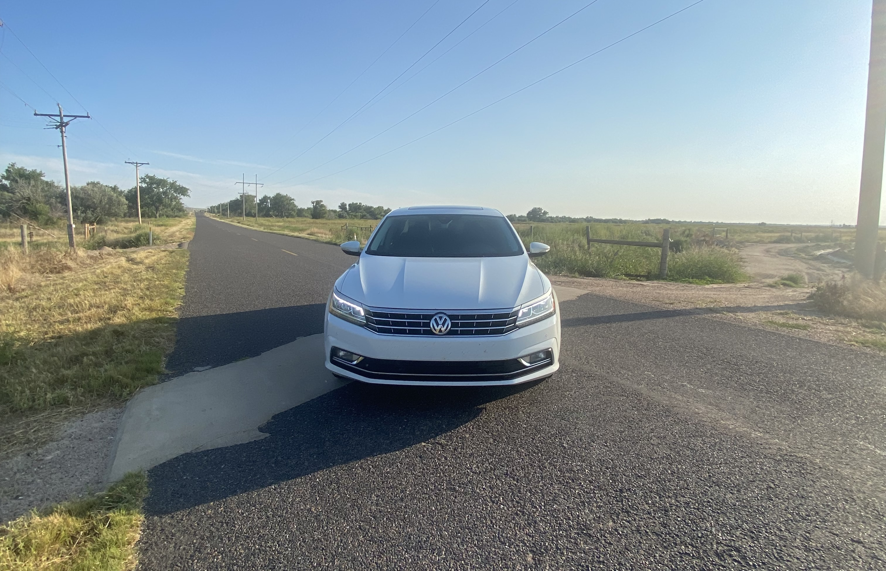
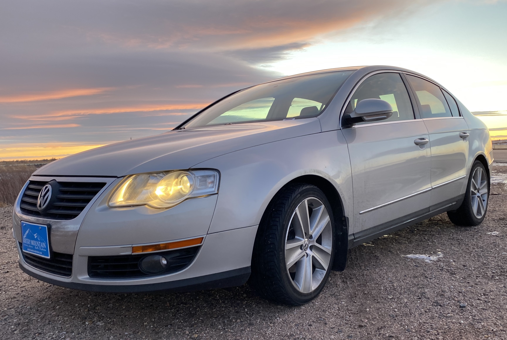
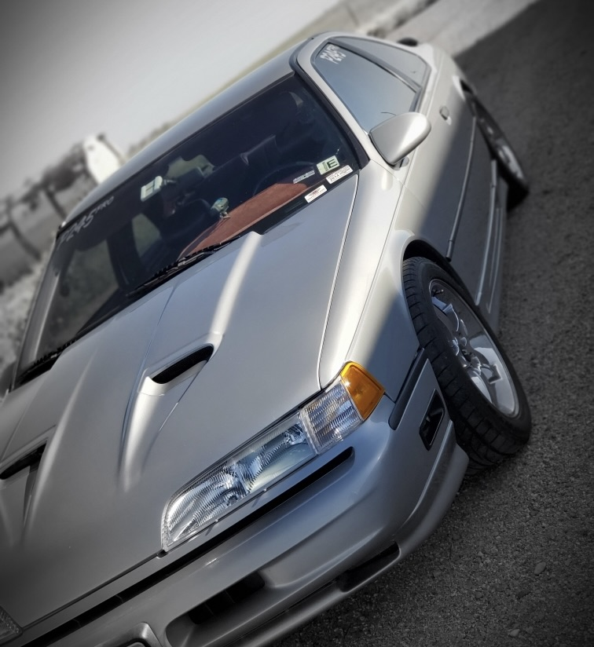
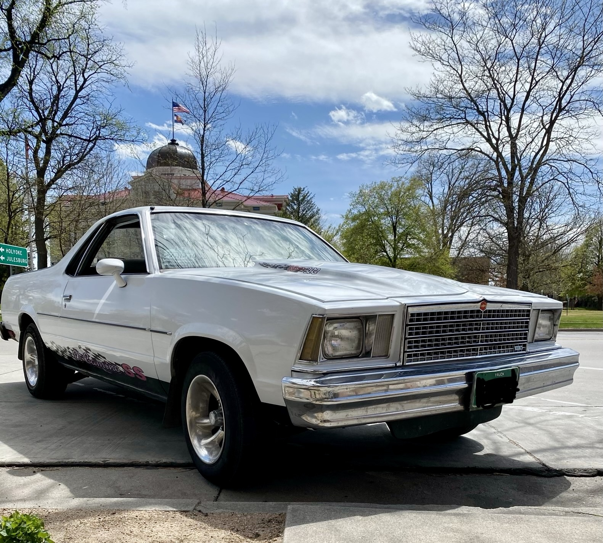

My Garage
A collection of the cars that fuel my passion for drag racing - past, present, and future.
2017 Volkswagen Passat VR6 SEL Premium
Current Car
Power
- 3.6L VR6 Engine
- 300 HP
- 268 lb-ft of torque
- 6-Speed DSG - Dual Clutch Transmission
- 14.6 second quarter-mile at Julesburg
Modifications
- Drilled and slotted brake rotors
Details
It features a narrow angle 10.6° V style cylinder bank, which allows six cylinders to sit in one compact cylinder head, making it both an inline motor, and a V motor, or much rather a VR6; R representing "Reihenmotor" in German and standing for "inline". Coupled with VW's 6-speed DSG transmission (direct-shift-gearbox), it features two sets of clutches, one set operates even gears, the other odd. This allows the car to shift at lighning speeds, and was co-developed with Porsche.
Being the SEL Premium trim, this car is loaded with tech and comfort features. It features a real cow-hide leather interior, heated seats front and rear, Fender premium audio, drivers assistance systems, as well as self-parking. But it doesn't stop there, it also features power folding mirrors, heated windshield washers for those cold winter mornings, interior ambient lighting and much more.
2010 Volkswagen Passat 2.0T Komfort
First Car
Power
- 2.0L Turbocharged Inline-4
- 200 HP
- 210 lb-ft of torque
- 6-Speed DSG - Dual Clutch Transmission
- 15.0 second quarter-mile at Julesburg
Modifications
- Upgraded Cold Air Intake
- Stage 1 ECU Tune
Details
My very first car that balanced daily comfort with a hint of sportiness. One of VW's first cars in the United States to feature their DSG transmission
For being a first car this car was packed with features: Digital guage cluster, touch screen, leather heated seats, adaptive lighting, and even a cooled glove box. Many automotive reviewers praised the Passat at the time for it's build quality, and Audi level of features.
1992 Ford Thunderbird Super Coupe
Dad's Money Pit
Power
- 3.8L Supercharged V6
- 650 HP
- 680 lb-ft of torque
- 4-Speed Auto
- 11.9 second quarter-mile at Julesburg
Modifications
- Forged Internals
- Larger Supercharger
- Custom ECU Tune
- Drag Slicks
- Miscellaneous Other Upgrades
Details
The Thunderbird SC was a special supercharged version of Ford's personal luxury coupe. Advanced for its era with technology that rivaled European sports cars. One of the only American cars of the time with fully independent suspension and sophisticated electronic systems.
Features included electronicly adjustable shocks allowing the driver to instantly switch the way the car drove between firm, and comfort settings. It also featured speed-sensitive power steering, and power leather sport seats with adjustable thigh, and side bolsters that inflate in corners to hug the driver.
1979 Chevrolet El Camino
Dad's "Truck"
Power
- 383 cubic-inch small-block V8
- 550 HP
- 580 lb-ft of torque
- 3-Speed Auto
- 13.1 second quarter-mile at Julesburg
Modifications
- Complete engine swap (from 267 ci to 383 ci)
- Built small-block V8
- Drag Slicks
- Miscellaneous Other Upgrades
Details
Built on GM's legendary G-body platform, shared with cars like the Monte Carlo and Grand National. The platform is famous for its Modification potential and parts interchangeability - like LEGO blocks for car builders.
Dad's car in specific features a customer leather/cloth SS (super-sport) branded interior, as well as a custom SS styled exterior.
2020+ Audi S5 Sportback Prestige
Future Dream Car

Power
- 3.0L Turbocharged V6
- 349 HP
- 369 lb-ft of torque
- 8-Speed ZF Transmission
- Quattro all-wheel-drive
- 12.9 second quarter-mile
Modifications
- Planned ECU tune
- Planned TCU tune
- High-flow intake
- Miscellaneous Other Upgrades
Details
The perfect blend of performance, technology, and luxury. Quattro AWD provides excellent traction in all condition, while the platform offers enormous tuning potential for performance upgrades.
- Virtual Cockpit 12.3-inch digital instrument cluster
- 10.1-inch touchscreen with wireless Apple Carplay
- Diamond-stitched leather sport seats
- Panoramic sunroof
- Tri-zone climate control
- Adaptive cruise control with Traffic Jam assist
- Matrix LED headlights with Laser
- Lane-keeping assist
- 360 degree cameras
- Head-up display